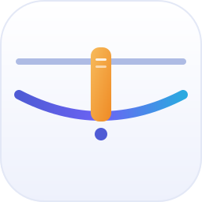
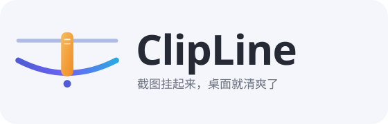
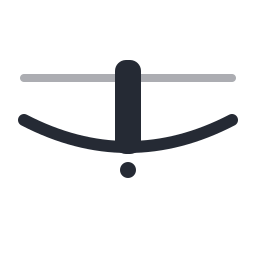
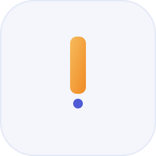
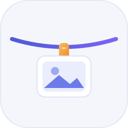
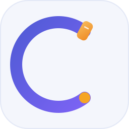

2026-11-04 决策：采用方案 E「双线」为正式品牌 Logo。本页展示主图标、字标锁排、三态托盘派生与小尺寸规范；其余四案保留为备选与延展资产。

上面一条直线是刚产生的截图，下面一条下垂的线是挂上晾衣绳，中间一枚夹子把两者连起来。Logo 本身就是产品的核心动作——直线缓缓坠成弧线，正好复刻绳子滑下的展开动画。
图形 + ClipLine + 中文副标。副标只作说明，不参与产品命名。图形左侧与文字之间留 1 个夹子宽度（26 u）以上净空。

对齐功能清单的硬性约束：默认描边态、开启「挂上复制的图片」时的填充态、绳上为空时的变暗态。16 px 稿为像素对齐的独立绘制，不是把 256 稿直接缩小；省略上线与坠点以获得清晰轮廓。
单色版用于高对比度模式、传真与单色印刷；反白版把 #252A34 全局替换为 #FFFFFF。动态标识用于启动画面、加载态与「新图上线」提示。


| 几何 | 256×256 网格，圆角方底 r=56，安全边距 24；上线 M24 78 H232（宽 8）；下线 M24 120 Q128 174 232 120（宽 12）；夹子 26×94 / r=11；坠点 r=8。 |
|---|---|
| 配色 | 绳 #4F5BD5 → #6C63F4 → #2AA9E0；夹子 #F7BB5C → #EF8A24；上线 #AEBBE4；底板 #FFFFFF → #EEF1FC；字 #252A34。 |
| 尺寸阶梯 | 16 / 20 / 24 / 32 / 48 / 64 / 256。16 px 与 20 px 必须使用专用简化稿（省略上线与坠点、坐标对齐整像素），24 px 以上用主图标等比缩放。 |
| 状态 | 默认 / 监听开启 / 空绳变暗，三态共用同一轮廓，只改线宽、饱和度与不透明度；不得靠加角标表达状态。 |
| 动效 | 直线 Q128 78 → 弧线 Q128 174，展开 0.65 s 缓出、停留 0.9 s、复位 0.45 s；与界面里绳子滑下动画同曲线。 |
| 落地 | 按技术文档约定用 Win2D / Composition 代码绘制，构建期栅格化生成多分辨率 .ico 与 MSIX 图标资产，不打包位图源文件。 |
四案不再是主 Logo 候选，保留为特定场景的延展资产；共用同一套配色与 24 u 安全边距，混用不会打架。

官网 Hero、商店头图、README。弧线与界面里的绳同公式。

若 16 px 实测辨识不足，作为托盘图标的回退方案。
右键扩展「挂到 ClipLine」、图片文件关联入口。
启动画面、周边、分隔固定照片的界面彩蛋。